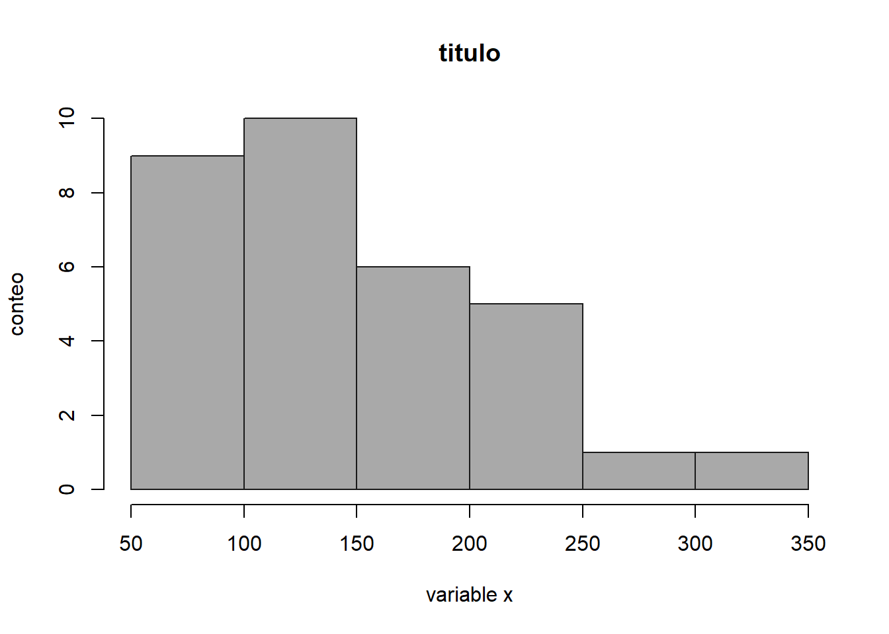
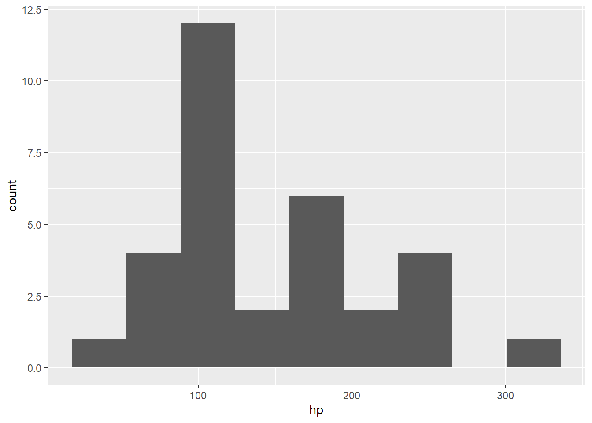
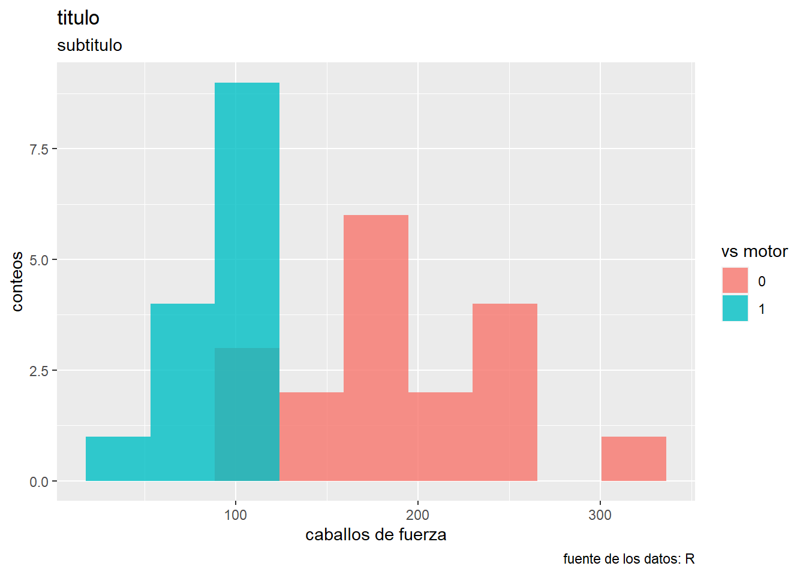

data("mtcars")- LEMA: INTENTA, INSISTE Y RESISTE
- DESARROLLADA POR: DIANA MARÍA TORO LÓPEZ
- CURSO: R-STUDIO GRATIS
- INSTRUCTOR: RAFA GONZALEZ GOUVEIA
- ENTIDAD: youtube.com/@GonzalezGouveia
T2V5 - histogramas en R
Objetivo: graficar histogramas en r
En este ejercicio vamos a:
- histogramas con base graphics
- histogramas con ggplot2
cargando los datos
haciendo histograma básico
# Caballos de Fuerza
hist(mtcars$hp)
editando histograma
hist(mtcars$hp,
breaks = seq(50, 350, 50),
col = 'darkgray',
border = 'gray10',
main = 'titulo',
xlab = 'variable x',
ylab = 'conteo')
cargar ggplot2
# install.packages("ggplot2")
library(ggplot2)hacer un histograma en ggplot2
ggplot(data = mtcars,
mapping = aes (x = hp)) +
geom_histogram(bins = 9)
haciendo más cosas interesantes
ggplot(data = mtcars,
mapping = aes (x = hp,
fill = factor (vs)))+
geom_histogram(bins = 9,
position = 'identity',
alpha = 0.8) +
labs(title = 'titulo',
fill = 'vs motor',
x = 'caballos de fuerza',
y = 'conteos',
subtitle = 'subtitulo',
caption = 'fuente de los datos: R')